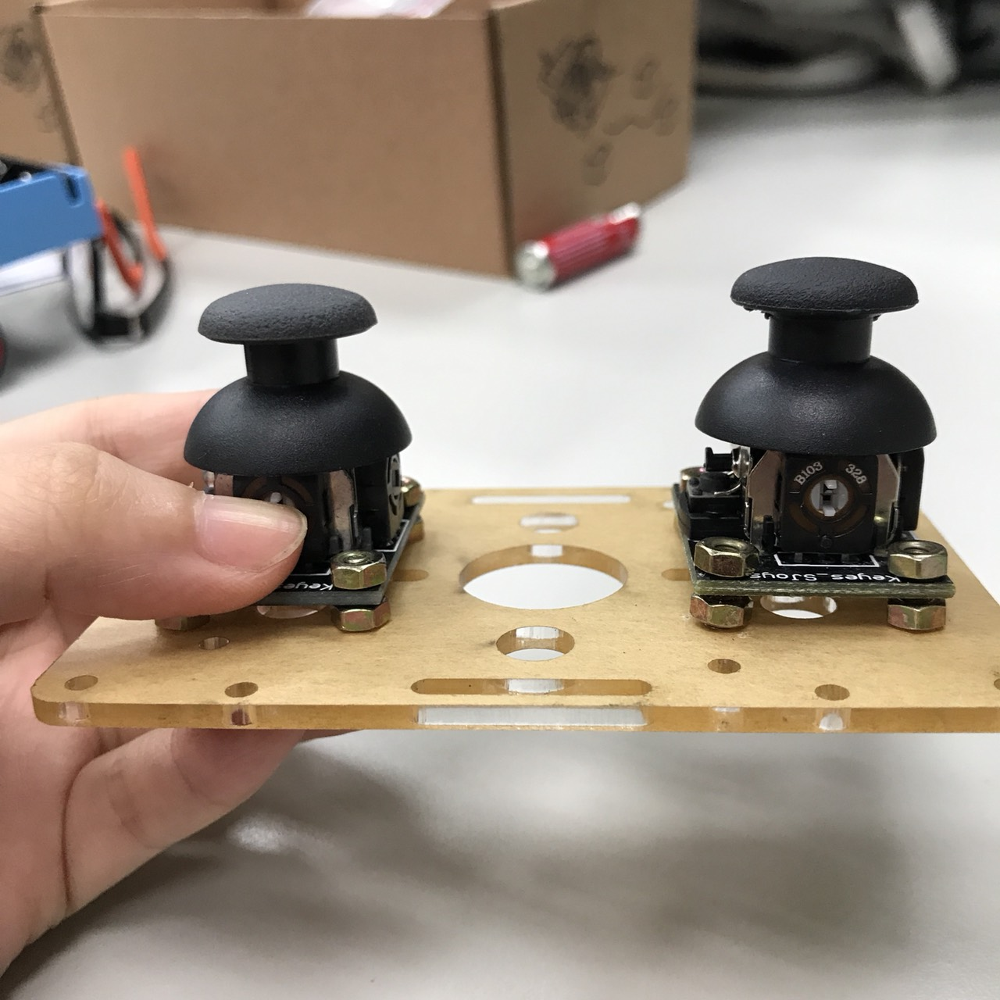

今天把兩個搖桿架在一片板子上。

用按壓的可以使LED變暗，按壓按鈕使電阻改變，沒有電流通過的話燈泡就不會亮。
程式碼：
#define Led6
#define SW A5
int din
void setup( )
{
pinMode(Led,OUTPUT);
pin
}
void loop
{
din=digitalRead(SW);
if(din==HIGH)
{
digitalWrite(Led,HIGH);
}
elde
{
digitalWrite(Led,LOW);
}v
}
之後還測試了怎麼讓燈泡先暗，按了遙感才亮，只要稍微改一下程式碼就可以了。
另外一個測試的程式碼：
#define Led 6
#define SW A5
int din
void setup( )
{
pinMode(Led,OUTPUT);
pin
}
void loop( )
{
din=digitalRead(SW);
if(din==HIGH)
{
digitalWrite(Led,HIGH);
}
else
{
digitalWrite(Led,LOW);
}
}
今天上課最後還發了一個新的東西，LED ring
#include
Adafruit_NeoPixel ring = Adafruit_NeoPixel(16, 7); // 16顆LED, DI接到D7
void setup()
{
ring.begin();
ring.setBrightness(32); // 0~255,太亮會傷眼
ring.setPixelColor(3, 255, 0, 0); // 點紅第3顆LED(由0算起)
ring.show();
}
void loop()
{
}